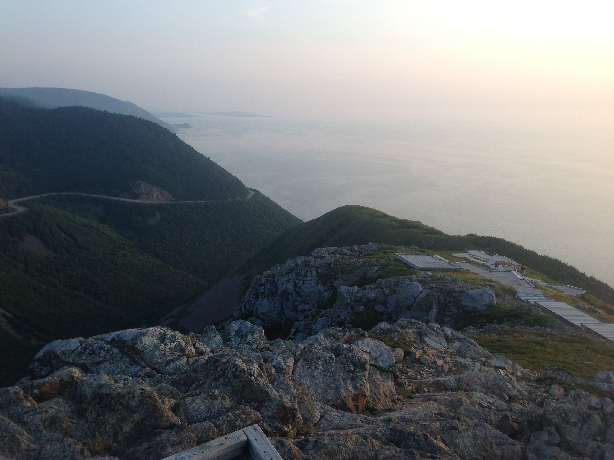
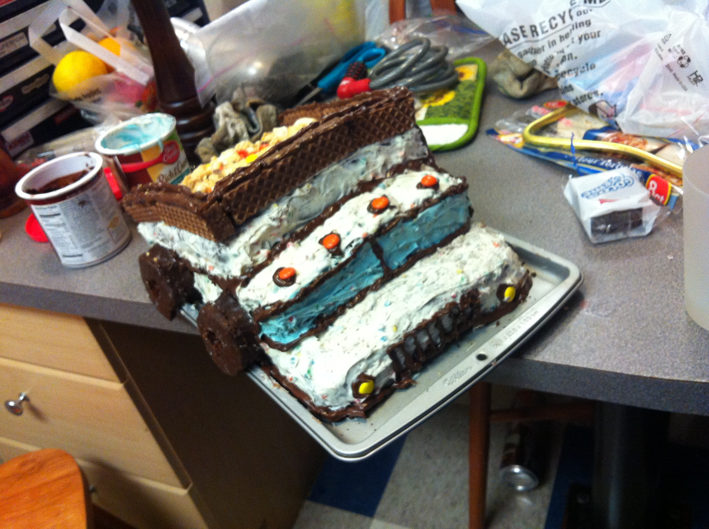
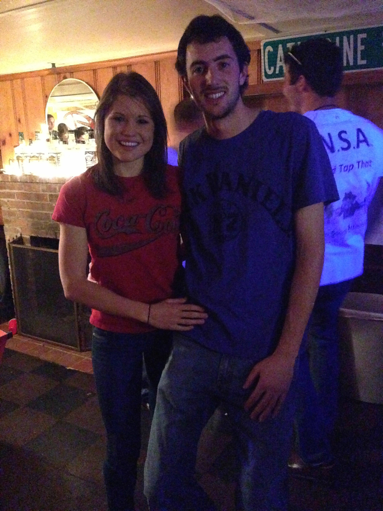

BILLY SAYS
One fun fact about Kaila you might not know is:
She is cold CONSTANTLY. Like, I don’t think she can ever be too warm. Maybe being born in the 'ideal temperate weather in the California bay area' is to blame.
KAILA SAYS
One fun fact about Billy you might not know is:
He sometimes finds out-of-place things in the grocery store and returns them to their proper location. What a guy!
HOW THEY MET
Kaila Says
Billy and I met the August after my Freshman year at UConn. I was a new hire in the University's Outdoors Program, and Billy was the manager at the time. The first time I laid eyes on him, we were asked to start a "staff bonding activity," where we each told the group something about ourselves that was unique. Billy's fact was that he converted a schoolbus and painted it patriotic colors, in order to road trip across the United States. Mine was that I had thirteen grandparents. I remembered him as the handsome, tall, fellow with a really bizarre fun fact.
Obviously, my fact was memorable too because he used it to start our first conversation later on. We hit it off immediately. Staff training was a week long, but Billy was only at training for two days, so when he left I had a few more days left, enough to wish he were still there! We continued to see each other through work, and Billy asked me on our first official date that following week.
Billy Says
We met at staff training for the UConn Adventure Center. Kaila was a new hire and I was a returning senior staff member.
HOW THEY FELL IN LOVE
Kaila Says
It wasn't hard to fall in love with Billy. He took me on a dream first date- the kind that seems too good to be true. We went to the drive-in movies in his pickup truck. I'd prepared by bringing a picnic basket with chocolate milk, which he said he liked, and popcorn, etc. Little did I know he already had a cooler filled to the brim with food and drinks. That was the first indicator I had of how much Billy had it together- he was adventurous and exciting, but always prepared.
Most of what I remember from that date was that I paid no attention to the movie. We had a chemistry I had never felt with anyone before, and I just liked talking to him, being near him. Both of the films finished, and we decided to drive back and hang out for a while more, just because we didn't want the night to end.
Fast forward a few weeks, several trips with the mountain biking team, an RV trip in his patriotic schoolbus with our work friends, and a harvest festival in his hometown, and I had fallen for him one hundred and ten percent.
Billy Says
Kaila and I quickly hit it off that first weekend of staff training. I was only able to stay the weekend (training was an entire week) because I had an internship to attend. I left that weekend wanting to get to know Kaila more. When the semester started we continued to hit it off and I asked her on a date to the drive-in movies. Kaila had mentioned that she had always wanted to go the drive-in movies in the back of a pickup truck full of blanket and pillows. Conveniently I had a pickup truck and a supply of blankets and pillows to make that happen.
HOW THEY GOT ENGAGED
Kaila Says
It was a shocker! I'd been in Maine at an internship and Billy'd been at work in Connecticut. So, Billy and I were celebrating the end of a summer away from one another with a trip to Nova Scotia. We were in Cape Breton National Park, driving to the most famous trail there- the Skyline trail, when our car started experiencing some issues...We parked it at the trailhead and smoke started pouring out of the front hood. Billy looked at it and determined we had a leak in one of the axle boots. I was frustrated, we were both tired, but we decided to do the hike anyway. We didn't talk much on the way in. I remember thinking that Billy was being pretty quiet, but I was wrapped up in thinking about the car and checking out the scenery. Eventually, we reached a point where there was a lookout to our left, and Billy motioned to me to pull off. I walked forward to the overlook, and was caught up in how beautiful the evening had become. The national park was at its finest- the sun was setting over the impressive mountaintops, and the rocky coast met the ocean and reflected the light from above. Here's a photo, even though it doesn't do much justice:
I asked Billy for a camera, to take a photo. He reached into his bag to get something (presumably, the camera), and his hand emerged with a lovely wooden box instead. He got straight to the point: "Will you marry me?" and I was shocked. My first response, I am embarassed to admit, was to say "Are you for real?!" (Apparently the very-real-looking diamond ring wasn't enough of an indicator that he was "for real.") I gathered myself then, and gave a nervous-looking Billy an "of course!" to which he broke out this grin: Long story short, we saw a moose on the way back, the car issues were resolved, and we found a bed to sleep in that night, so it turned out to be a pretty wonderful day.
Billy Says
It was hard being away from Kaila while she was at her internship in Maine at Tyler Technologies, and I had known for awhile that I wanted nothing more than to have her be my wife. So, I started ring shopping. This was a big step for a guy who's only previous experience with jewelry was making earrings and a necklace for Kaila out of bike parts.
We got engaged on an overlook while hiking the Skyline Trail in Cape Breton Highland National Park. We were on a lookout point and Kaila asked for me to go grab the camera to take a picture of us (it was a beautiful backdrop). I bent down to take the camera out but instead pulled out the ring. I asked her to marry me, and as they say... "the rest was history". We enjoyed one of the most incredible sunsets I've ever seen on the way back.
HOW THEY KNEW EACH OTHER WERE "THE ONE"
Kaila Says
Billy is the perfect blend of resourcefulness and adventurousness. He's both exciting and mellow, challenging and sweet. He's ever loyal and kind- really he's one of the most genuine and upstanding human beings I've ever met. But Billy's never boring. He's the perfect person to teach me about cars, or to travel the world or analyze a favorite podcast with. He will sit with me and watch a marathon of "Game of Thrones" one day, and hike Mount Washington with me the next. He's not only the perfect companion and partner, but he's also a wonderful boyfriend and fiance. When I first met Billy, I knew we had chemistry. After being with him for years, that hasn't faded. It's just been supplemented by the fact that we really work best together. I can't wait to marry him, but I also can't wait to spend life with him.
Billy Says
Kaila is a truly amazing and unique person. She is motivated, smart and knows what she wants (I am happy that she wants me!). Kaila shares the same love of nature and adventure that I do, and we are truly at home exploring. She has the ability to make the best of any situation. She makes me feel loved and wanted. Kaila is the person I want to wake up to every morning for the rest of my life. I want nothing more than to make her happy every day. Life is an adventure and I want to spend it with Kaila.
MEMORABLE MOMENT FROM OUR RELATIONSHIP
Kaila Says
The road trip, for me, was a huge one. Billy and I first took our relationship to the road the summer after we met. Billy's parents were kind enough to loan us their minivan, and we went on a road trip across the country. We started in Connecticut, went southwest to Utah/Arizona/Colorado, and then made our way up the west coast all the way to Vancouver, Canada. On the way back, we spent a long time in Canada, but also jaunted down to Montana and back to Niagara Falls. If you're interested in reading more about our time on the road, or just want to get to know us as a couple, check out our blog from the trip. It's a fun read, if we do say so ourselves.
Billy Says
Our road trip in the van. The road trip we went on brought the two of us very close. Its impossible to not be close on a road trip through some of the most scenic places in the US and Canada. The fact that we were living out of a 20 sq ft. minivan also helped, I'd imagine. The many hours on the road allowed us to get to know each other better. I don’t think there is any better test of a relationship that being in a car with them for 10,000 miles in 30 days.
FUNNY MOMENT FROM OUR RELATIONSHIP
Kaila Says
There have been so many funny moments with Billy. For instance, the day I found out he fears ladybugs, or the day we created dance moves for every tool in his toolbox (the hammer and the paintbrush are the obvious winners).
One of my favorites was when we decided to make a cake together for a cycling team race. Billy had always wanted to make a cake shaped like a Tonka truck (why, I have no idea!), so we did.  Night one, two of our friends (who shall remain anonymous) took said cake into the bathroom and cut it open, eating the entire center until it was hollow. They kept the outside intact, hoping that no one would notice! We woke up the next morning to find the cake caving in on itself, and our friends confessed.
One of my other favorite things is playing radio games with him. We have this one where we change the station over and over again, and the first person to name the song or the artist wins points- man, it can get heated!
Billy Says
The time the mosquitos attacked. Kaila and I woke up in the back of the van on our road trip covered in mosquitos. We had left the windows open a hair for airflow overnight and somehow an army of mosquitos had come in. Kaila, terrified, quickly escaped the van to 'use the bathroom' and left me to take on the mosquitos singlehanded. She came back to me on a rampage swatting around the inside of the van. Many died that day.
Billy and I biking the Whole Enchilada" in Moab, Utah.
Billy and I at Dave (Best Man) and his fiancee Kristin's one Halloween